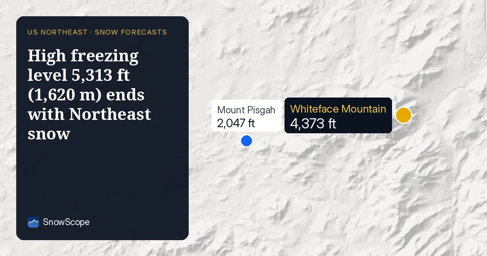

High freezing level 5,313 ft (1,620 m) ends with Northeast snow
Three of four Northeast ski resorts face a freezing level above their summits today, meaning rain is falling even at the peaks. By tomorrow, the freezing level drops sharply and 20–25 cm of snow arrives across Whiteface Mountain, Stratton, Okemo Mountain, and Magic Mountain.
See the live snow forecast for Whiteface Mountain in the SnowScope appSnow depth, powder alerts and the 3D map, free.
Why freezing level matters
The 0°C level—the height where air temperature crosses freezing—is currently between 2,750 and 5,970 ft (840–1,820 m) across the Northeast. At Whiteface Mountain, summit elevation 4,373 ft (1,333 m), it reached 5,313 ft (1,620 m) today: a 940 ft gap. When freezing stays that high, every drop of precipitation reaching the summit falls as rain, not snow, because the air is too warm for ice crystals to survive. The snow line—where wet snow transitions to rain—sits about 1,000 ft (300 m) below the 0°C level during the warmest hours. So at Whiteface, rain is falling right at the summit. At smaller Magic Mountain (top 2,850 ft / 869 m), the snow line climbed to 4,920 ft (1,500 m), meaning rain falls 2,070 ft above the peak. This is why freezing level is the first question in early season: it separates rain from snow, and determines whether incoming moisture builds base or melts existing cover.
| Resort | Snow depth | New snow, 72 h | Coming, next days | Top |
|---|---|---|---|---|
| Whiteface Mountain | 0 in (0 cm) | 2 in (6 cm) | 9 in (24 cm) | 4,373 ft (1,333 m) |
| Stratton | 0 in (0 cm) | 0 in (1 cm) | 10 in (25 cm) | 3,881 ft (1,183 m) |
| Okemo Mountain | 0 in (0 cm) | 0 in (0 cm) | 8 in (20 cm) | 3,320 ft (1,012 m) |
| Magic Mountain | 0 in (0 cm) | 0 in (0 cm) | 8 in (20 cm) | 2,851 ft (869 m) |

Today's pattern—no snow on the ground yet
This high freezing level brings an important caveat: there is currently no snow on the ground to have rain fall on. Regional coverage sits at just 110 km², with only one resort reporting measurable depth. The bare peaks mean today's rain is shedding off rock and soil into streams. The incoming 20–25 cm forecast for November 11–13 hasn't arrived yet, so the classic rain-on-snow hazard—where water percolates through new snow, adding weight and triggering instability—isn't present yet. This is timing luck: the warm, wet period (high freezing level, rain) is passing through before the new snow arrives. After November 11, as the freezing level drops and new snow lands on cold ground, conditions will reset. Early-season deposits build base; late-season deposits on thawing ground create surface problems. This one is falling at the right moment.
The turning point
Here's where the forecast changes everything. November 11 brings a sharp cooling. The freezing level minimum drops to 2,460 ft (750 m), well below all four summits. At Stowe, the nearest weather station at 1,339 m elevation, model precipitation is 7 mm on November 11—and in this cold, dense air, all of it falls as snow. By November 12, the freezing level rebounds (maximum 6,035 ft / 1,840 m), but cold air is already in place, and the system is moving. The regional snapshot tells the story: today, 110 km² of snow, 1 resort with cover; November 13, 32,810 km², 62 resorts measurable. That's the speed of change when a cold front sweeps through. Early season in the Northeast is boilerplate: a sharp, brief transition from autumn warmth to winter cold.
What 20–25 cm means
The model forecast for November 11–13 is 20–25 cm at each resort: Whiteface 24 cm, Stratton 25 cm, Okemo and Magic 20 cm each. Currently all four have 0 cm on upper slopes. That fresh snow will land on mostly bare ground, except for a few thin patches left from the November 8–9 pulse (which added only 1–6 cm before melting). Early-season snow is characteristically dense and wet while air temperatures stay in the 1–5°C range; it will settle and compact within hours. At Magic Mountain (the lowest and smallest, 2,850 ft), 20 cm is meaningful base-building—the difference between skiable and closed. At Whiteface (highest, 4,373 ft), 24 cm might form a thinner cushion on steeper slopes. The timing coincides with cold air arrival, so snow quality will improve through the day as the system moves through and temperatures drop.
Reading the forecast
This model run is from November 10 and subject to change, as all forecasts are. The critical detail is the speed of the freezing level collapse on November 11—if the frontal passage is delayed, more moisture falls as rain at altitude; if it arrives on time, more transitions to snow. Regional precipitation data at three points shows: Tug Hill 15 mm total (mostly November 12), Stowe 16 mm (split between November 10–11), Buffalo 9 mm (November 12). Whiteface is likely to receive similar amounts. The forecast confidence for the basic pattern (cool-down, rain-to-snow transition, 20–25 cm accumulation) is moderate. If you're planning backcountry travel or off-piste skiing, check the official avalanche bulletin. Rain on new snow on steep slopes can be a hazard, even if quantities seem modest.
Tips for skiers
- Rain is falling on the summits today, above 4,265 ft (1,300 m) at Whiteface. Expect wet rock and slush. By November 11, the freeze level drops below the peaks and snow begins.
- Incoming 20–25 cm will be heavy and wet at first, then improve in quality as air temperature drops through the day. Plan early morning skis, as mid-day visibility and corn may be issues.
- Magic Mountain is the most exposed to marginal conditions today (rain down to 2,850 ft / 869 m), while Whiteface is least exposed (summit 4,373 ft / 1,333 m near the current freeze line). Choose your mountain accordingly.
- The 24–25 cm forecast is an estimate for three days; don't expect all of it in one day. Watch local reports from each resort for real accumulation as the system moves through November 11–13.
- Check the official avalanche bulletin if you are heading off-piste, especially after November 11 when new snow arrives on wet ground.
About these numbers
Resort snow depths are the deepest snow on the resort's upper slopes from the SnowScope snow model (about 1 km, run of 10 November); they are estimates for an area, not a measurement at one point. Station values are measurements on the date shown. Forecasts can change. Always read the official avalanche bulletin before going off-piste.
Official avalanche bulletins: Mount Washington Avalanche Center
Cite this report
For research, teaching or the press: the numbers and charts are free to reuse under CC BY 4.0 with this citation.
SnowScope (2026), High freezing level 5,313 ft (1,620 m) ends with Northeast snow, https://snowscope.app/blog/en/2026/11/us-northeast-freezing-level-snow-line-10-november-2026.html, accessed 2026-11-10
SnowScope (Atlas Labs). (2026, November 10). High freezing level 5,313 ft (1,620 m) ends with Northeast snow. SnowScope snow reports. https://snowscope.app/blog/en/2026/11/us-northeast-freezing-level-snow-line-10-november-2026.html
BibTeX
@misc{snowscope2026usnortheastfreezinglevel,
author = {{SnowScope (Atlas Labs)}},
title = {High freezing level 5,313 ft (1,620 m) ends with Northeast snow},
year = {2026},
month = nov,
howpublished = {\url{https://snowscope.app/blog/en/2026/11/us-northeast-freezing-level-snow-line-10-november-2026.html}},
note = {Published 2026-11-10 20:02 UTC; accessed 2026-11-10}
}· CC BY 4.0 · Methods, data and tools →
Whiteface Mountain: snow and temperature by height, this winter vs last (tools) →
Follow Whiteface Mountain
Free: a message when fresh snow is coming, and the forecast every morning.
More snow reports

Where will it snow in the US Northeast between 13 November and 26 November, and how much? We asked the two global models that reach two weeks, ECMWF …

A practical kit list for Stowe, Vermont: layers, face cover, goggles, sharp edges and hand warmers, tied to the snow of 46 past winters on Mount Mansfield.

Ski Eldorado forecast 11 cm of new snow but freezing level reaches 3460 m on Nov 6, delaying snow arrival across the Northeast.